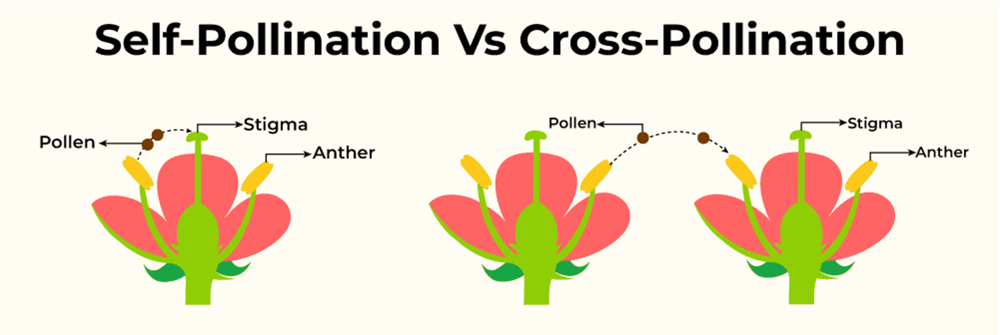
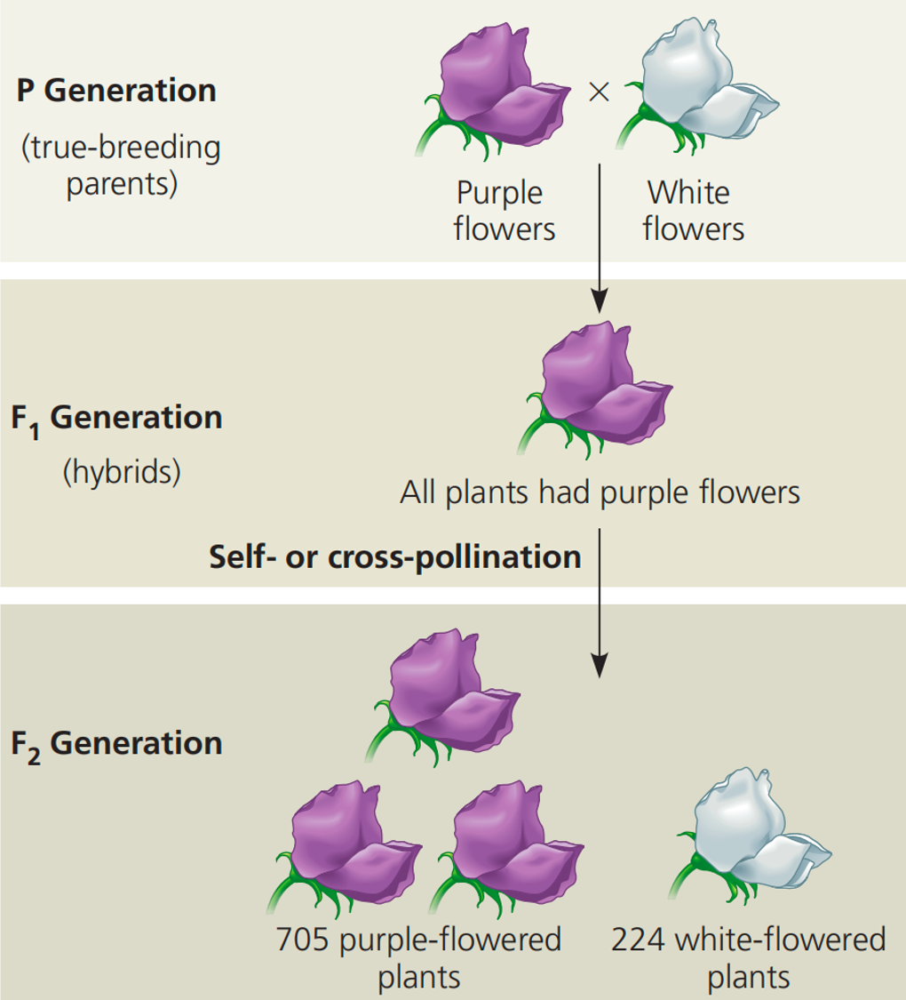

5.1 Lecture 9: Mendel and his Peas - 1
5.1.1 Keywords
| 英文 | 中文 | 解释 |
|---|---|---|
| Trait | 性状 | characteristic |
| Heredity | 遗传 | the passing of traits from parents to offspring |
| Genetics | 遗传学 | the study of how traits are passed on |
| Self-pollination | 自花授粉 | a form of pollination when pollen from one plant lands on the pistil of a flower on the same plant |
| Cross-pollination | 异花授粉 | a form of pollination when pollen from one plant reaches the pistil of a flower on a different plant |
| Pistil | 雌蕊 | female organs of a flower |
| Stigma | 柱头 | the part of a pistil that receives the pollen during pollination |
| Stamen | 雄蕊 | male organs of a flower |
| Anther | 花药 | the part of a stamen that contains the pollen |
| Pollen | 花粉 | consists of pollen grains, which produce male gametes (sperm cells) |
| True-breeding | 纯种 | organisms whose offspring are the same as the parent |
| Hybrid | 杂种 | organisms from true-breeding parents with different traits |
5.1.2 Lesson outline
A. Early Ideas about Heredity
1. Heredity is the passing of traits from parents to offspring.
2. In the 1850s, Gregor Mendel, an Austrian monk, performed experiments that helped answer questions about how traits are inherited.
3. Genetics is the study of how traits pass from parents to offspring.
B. Mendel’s Experimental Methods
1. Pea plants were ideal for genetic studies because they reproduce quickly; they have easily observed traits; and the experimenter can control which pairs of plants reproduce.
2. Mendel controlled which plants pollinated other plants.
a. When a(n) true-breeding plant self-pollinates, it always produces offspring with traits that match the parent.
b. By cross-pollinating plants himself, Mendel was able to select which plants pollinated other plants.
3. With each cross-pollination Mendel did, he recorded the traits that appeared in the offspring.
C. Mendel’s Results
1. Mendel’s crosses between true-breeding plants with purple flowers produced plants with only purple flowers. Crosses between true-breeding plants with white flowers produced plants with only white flowers.
2. Crosses between true-breeding plants with purple flowers and true-breeding plants with white flowers produced plants with only purple flowers.
3. The first–generation purple-flowering plants are called hybrid plants.
4. When Mendel cross-pollinated two hybrid plants, the trait that had disappeared in the first generation always reappeared in the second generation.
5. Mendel analyzed the data from many experiments on seven different traits. He always noted a 3:1 ratio; for example, purple flowers grew from hybrid crosses three times as often as white flowers.

